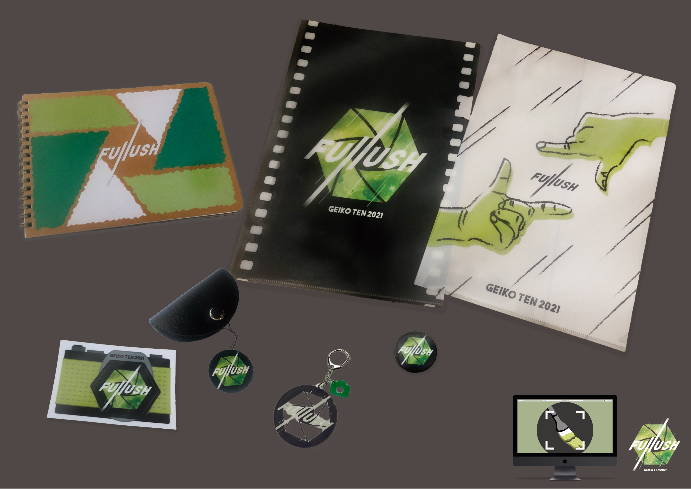
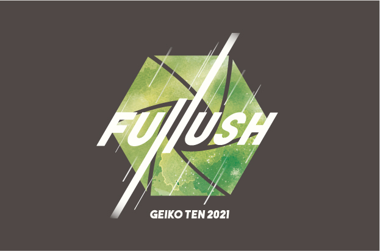
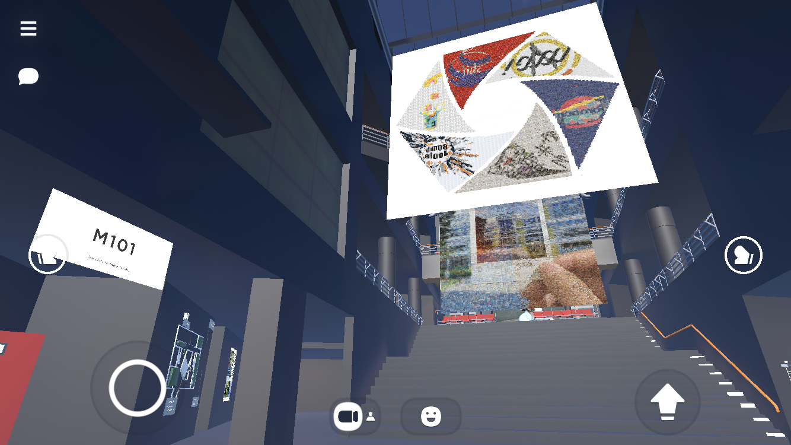
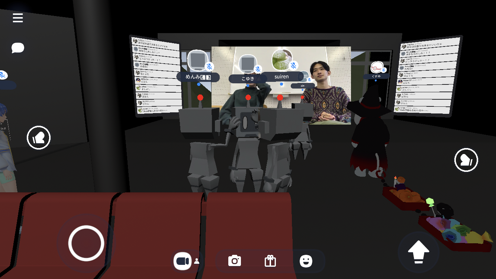
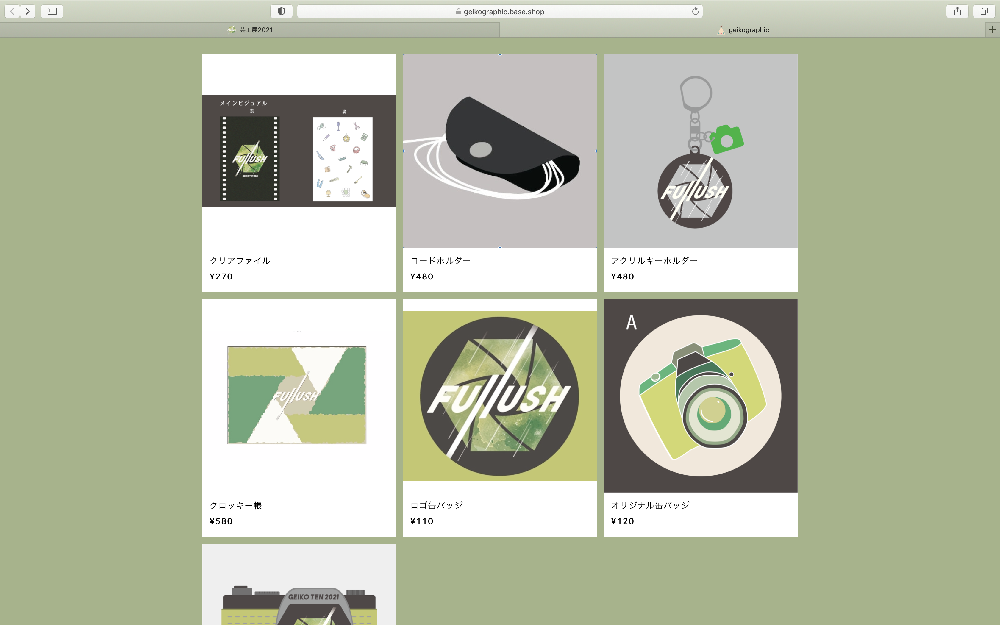
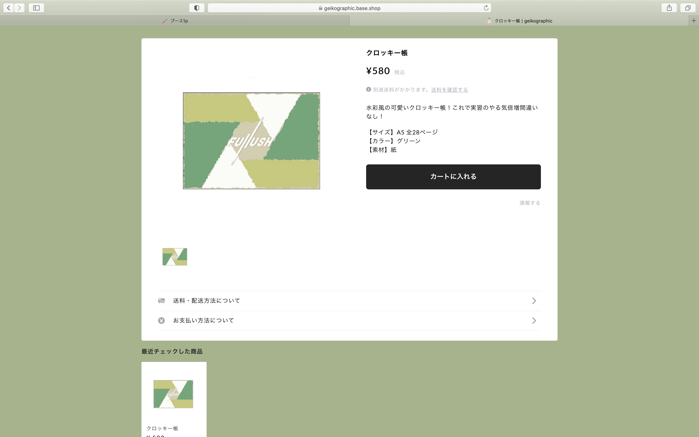
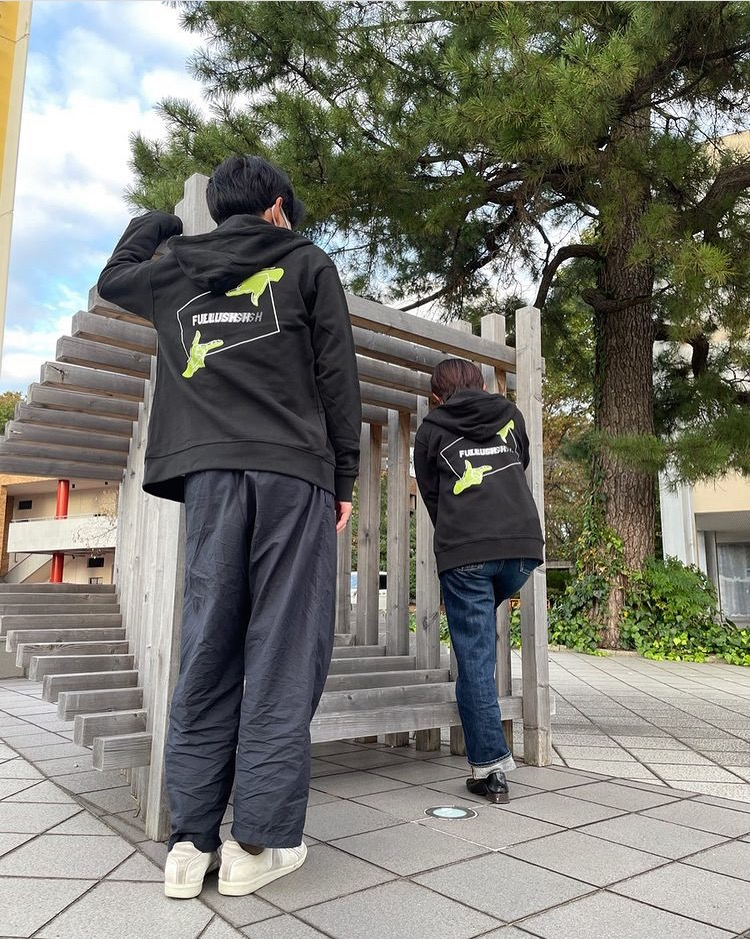

---Goods---
芸工展2021 公式グッズ
◴ 2021/7/31-2021/10/22 ✎ Illustrator Photoshop
BACK GROUND
FULLUSH
カメラのシャッターを切るように辛いこの時期もfull flush（元気いっぱい）に思い出として残していこうという意味の造語
FULLUSHというテーマのもと今年は学園祭ではなく展示会としてオンラインで芸工展を開催
WEBサイトとclusterでイベントを行った




私はグラフィック部署からグッズ販売に携わった
クリアファイルとクロッキー帳デザインを担当
制作したグッズは本サイト模擬店ページから販売し、多くの方に購入して頂いた


PROCESS
制作するグッズの提案、値段・発注先の調査
グループ分け
--クリアファイル・クロッキー班での活動--
全員でデザイン案を提案・選定
結果、クリアファイル１案、クロッキーのデザイン案が採用されたため担当
ディティールの修正、グッズ仕様の決定
購入事前アンケート
発注・販売
WORK
---ファイル---


クリアファイルのデザインは部署長からの選出でその後パーカーデザインにも採用された
---クロッキー帳---